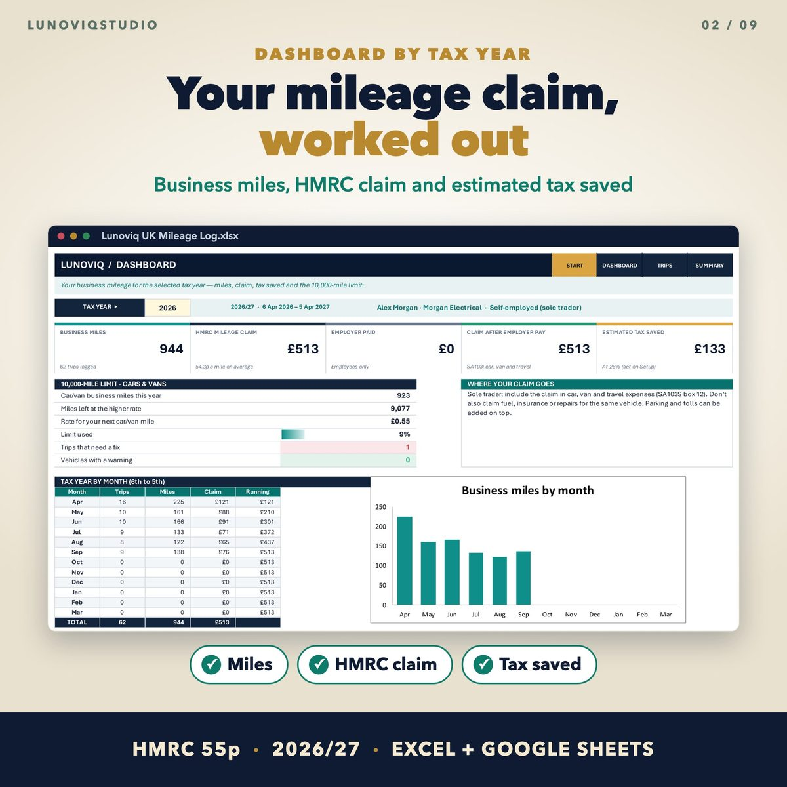
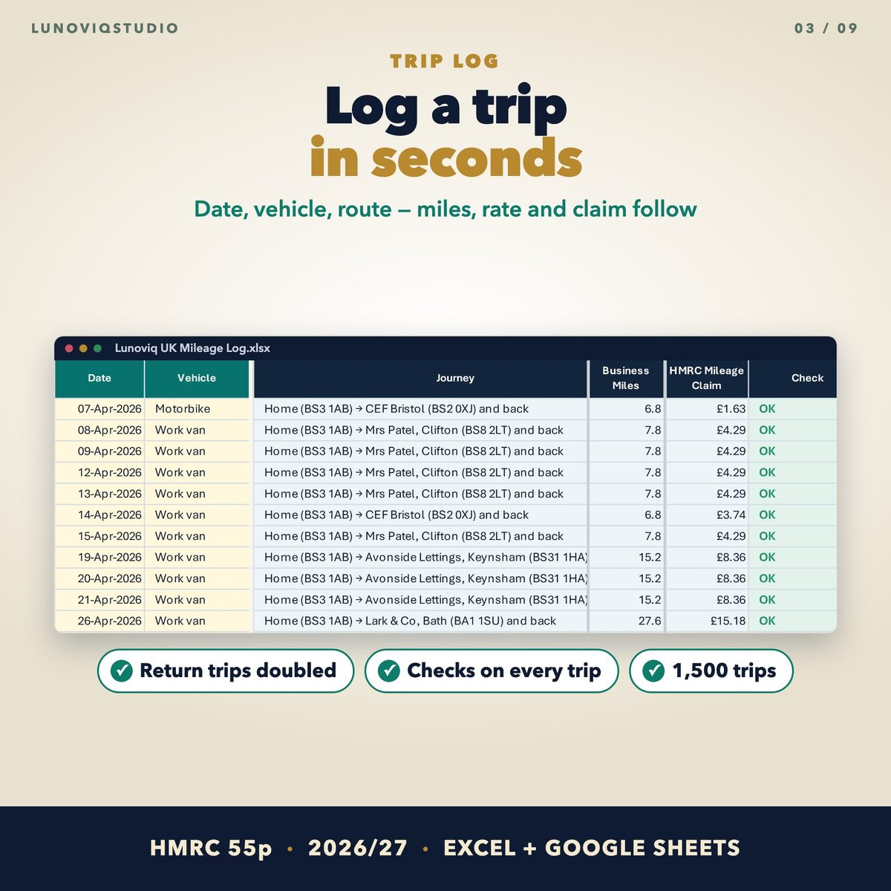
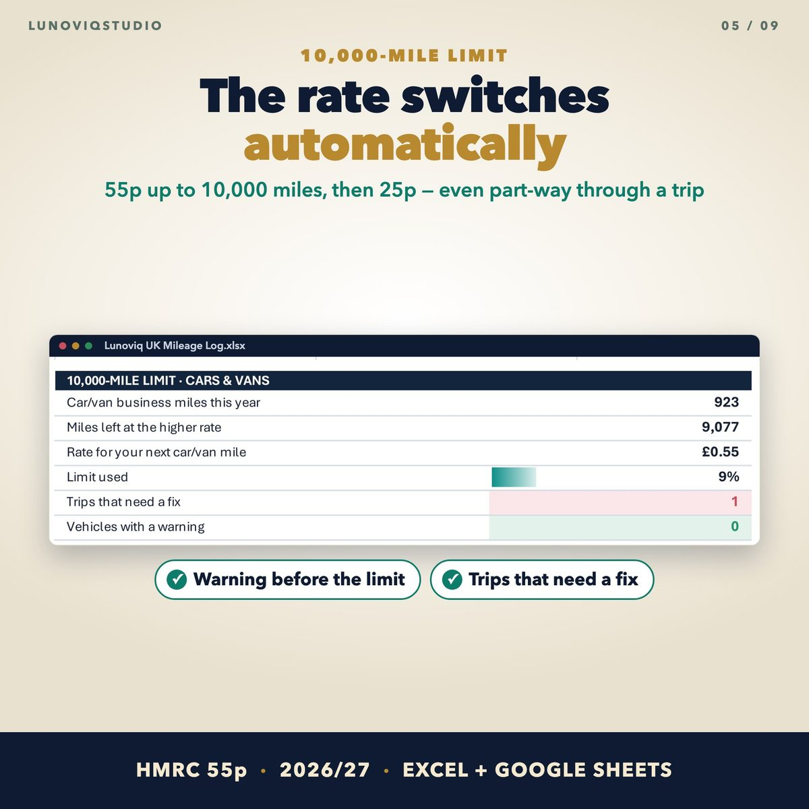
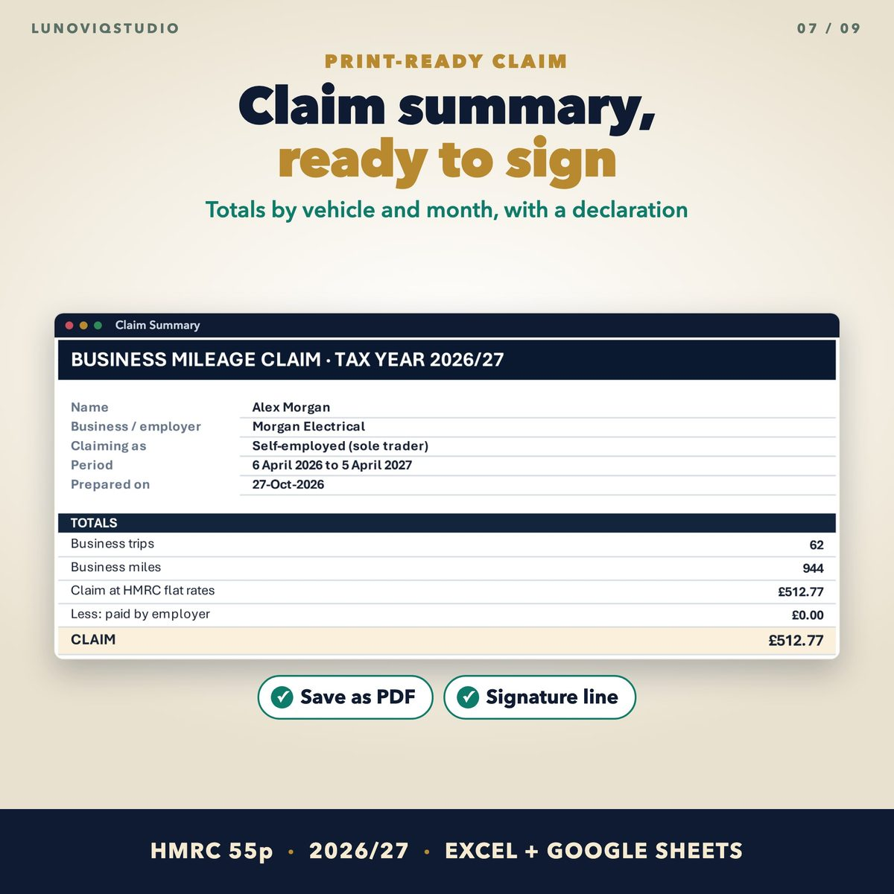

Home › Spreadsheets › UK Mileage Log Spreadsheet 2026/27
UK Mileage Log Spreadsheet 2026/27
Log business trips at HMRC's 55p rate and let the spreadsheet work out your mileage claim for the 2026/27 tax year.
Made for: Sole traders, landlords and employees who use their own car, van, motorbike or bicycle for work.
Get it on EtsyWhat it doesWhat it does
HMRC rates built in
Cars and vans 55p a mile from 6 April 2026 (45p before), 25p after 10,000 business miles; motorcycles 24p; bicycles 20p.
10,000-mile switch
The rate changes automatically, even part-way through a trip, with a warning before you reach the limit.
Saved routes
Save the journeys you repeat. Places, postcodes and miles fill in when you pick one. Return trips are doubled for you.
Checks on every trip
Flags a missing vehicle, miles, postcodes or purpose.
Where the claim goes
SA103S box 12 for sole traders, SA105 box 29 for landlords, or a tax relief claim for employees.
Print-ready claim summary
Totals by vehicle and month with a declaration and signature line.
See it




What you get
- Blank Excel workbook (up to 1,500 trips)
- Sample workbook
- Google Sheets version (copy link in the PDF)
- Quick-start PDF
Instant download. One-off price, no subscription, no macros.
Questions
Can I use 55p for the whole 2026/27 tax year?
Yes. The 55p rate for cars and vans applies to business miles from 6 April 2026. Trips before that date use 45p, and the spreadsheet picks the right rate from the trip date.
Is commuting included?
No. Ordinary commuting to a permanent workplace is not business travel. The log is for business trips only.